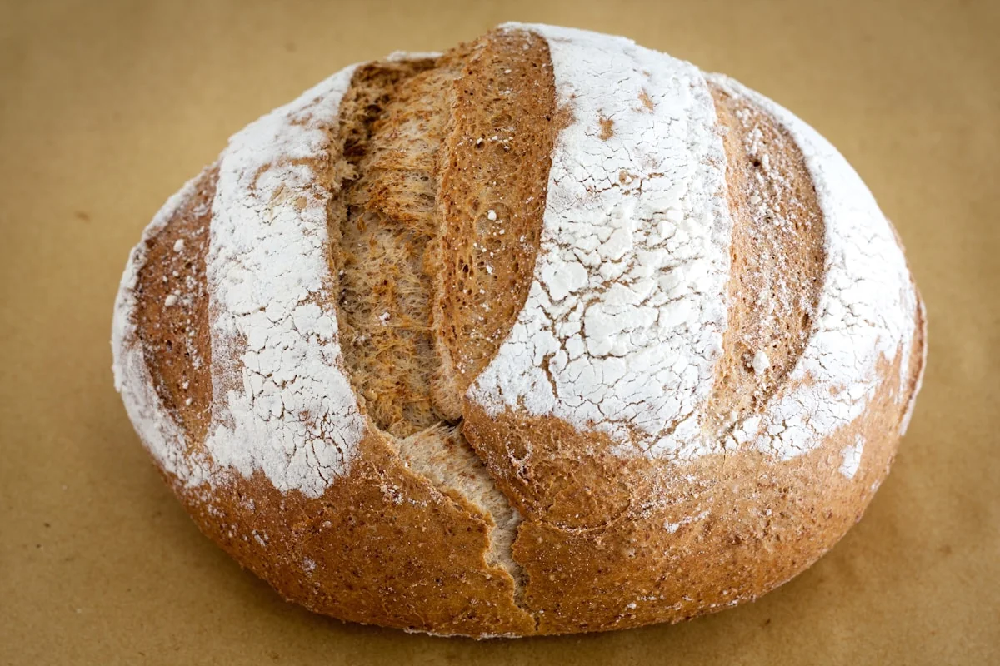

25 години практично искуство во прехранбената технологија.
KIDEX нуди консултантски услуги за преработка на пченица и производство на брашно, пекарски и кондиторски производи и тестенини.
Стручно знаење. Практични резултати.
КИДЕКС ДООЕЛ е консултантска компанија специјализирана за целокупната технологија на преработка на пченица и производство на брашно, пекарски и кондиторски производи и тестенини.
Компанијата има 25 години практично искуство во овие индустрии и голем број успешни проекти со компании во Северна Македонија и регионот.
KIDEX учествува на саеми, семинари и обуки, каде што ги претставува своето искуство, успешните проекти и иновациите во областите за кои е специјализиран.
Работата ја опфаќа целокупната технологија на преработка на пченица и производство на брашно, пекарски и кондиторски производи и тестенини, вклучувајќи опрема и контрола на квалитетот.
Јавете ни се и заедно да создадеме успешна приказна.

Малите одлуки во процесот го обликуваат готовиот производ.
KIDEX останува блиску до состојките, методите и луѓето што ги претвораат идеите во резултати.
Блиску до состојките, блиску до производителот.
Рецептурите, процесите и формулациите се корисни кога функционираат на вистинска производна линија. Пристапот на KIDEX се темели на ова во секоја фаза — од првата анализа на постоен производ до конечната спецификација за нов.
Разбирање на производот
Почнуваме со тоа како функционира производот денес — состојките, процесот и резултатот на полицата.
Заедничка работа
Советуваме во непосредна соработка со тимот на производителот.
Применливо решение
Подобрена рецептура, нова формулација или процес што тимот може да го примени во производството.